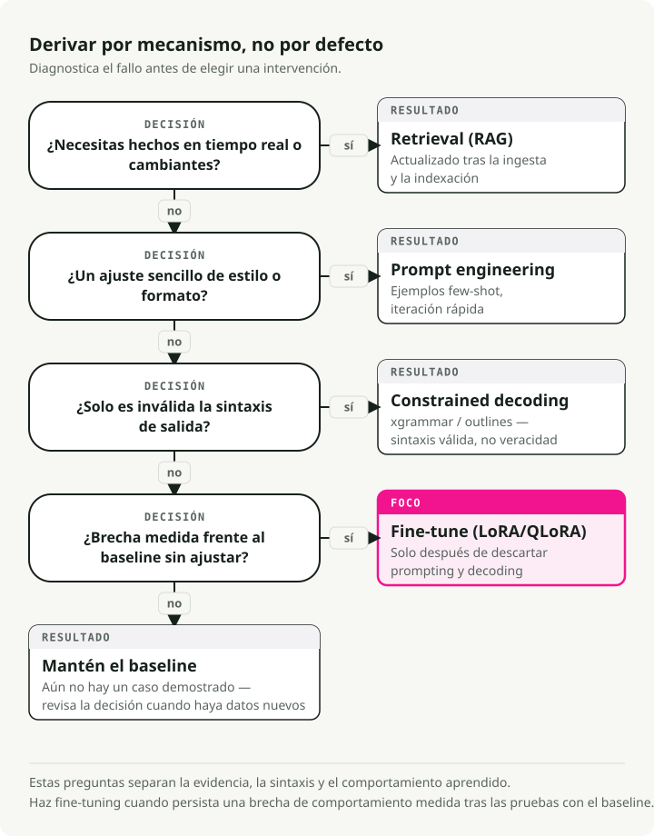
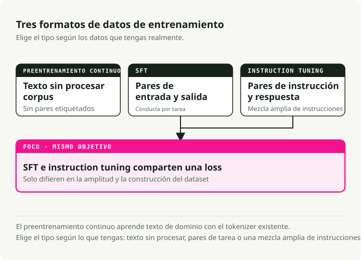
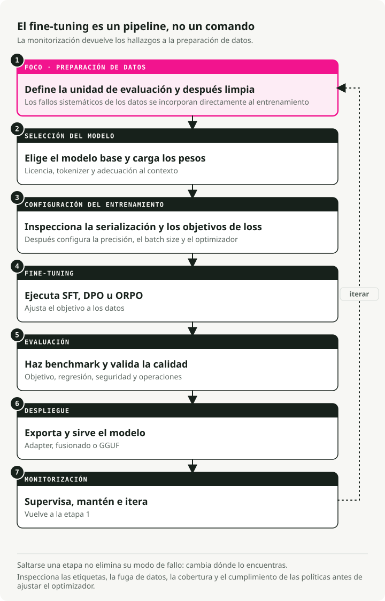
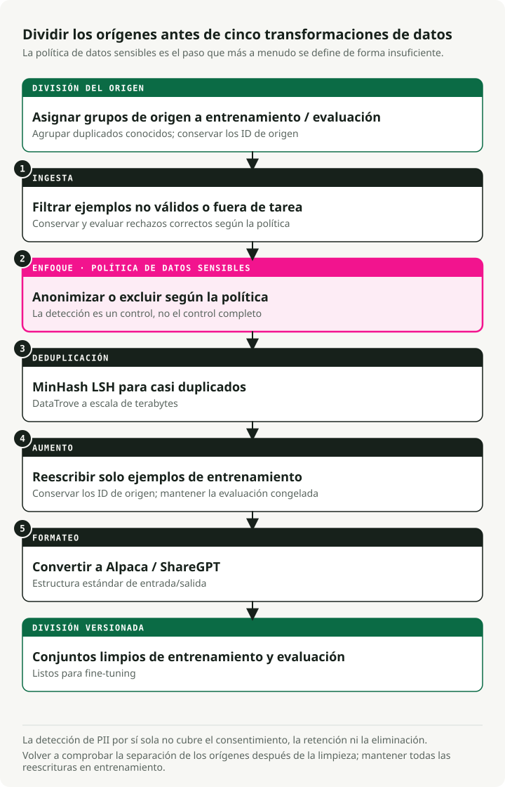
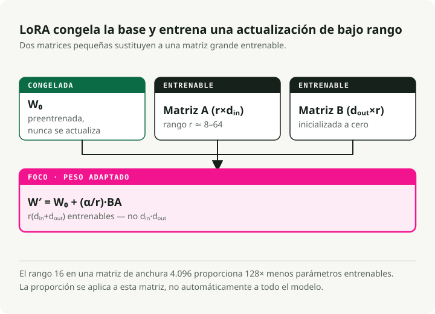
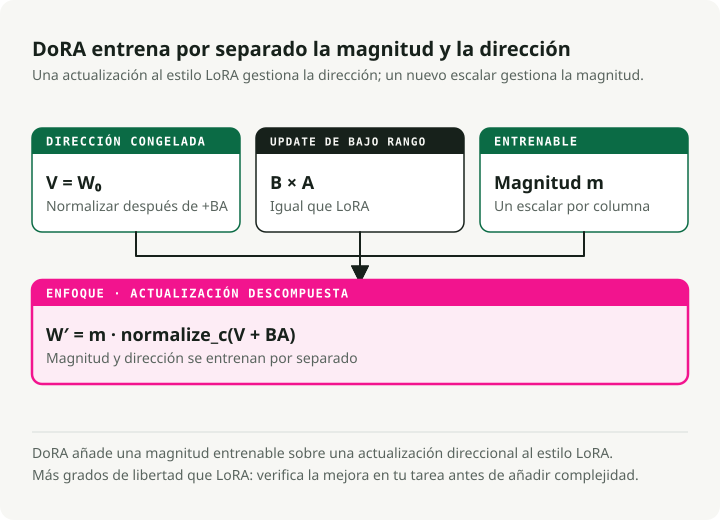
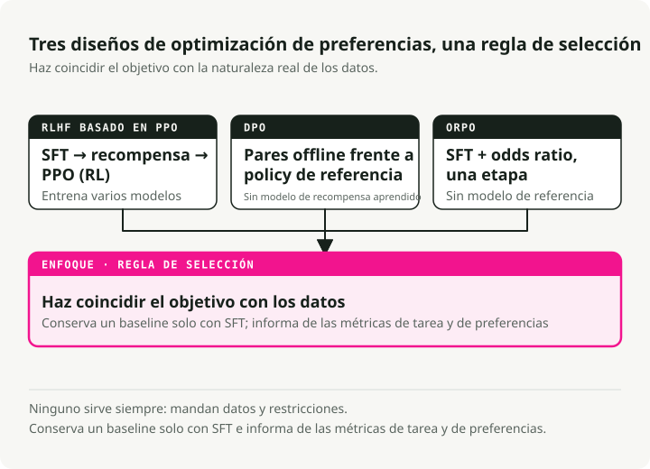
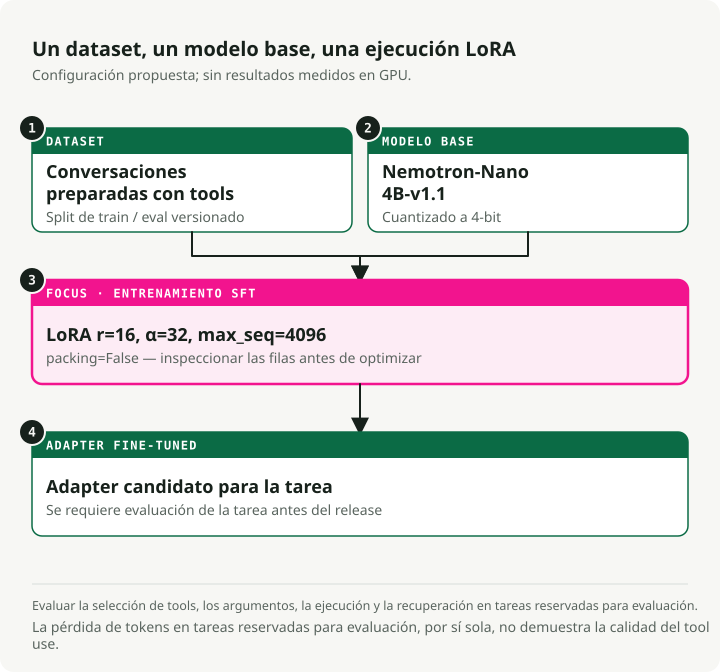
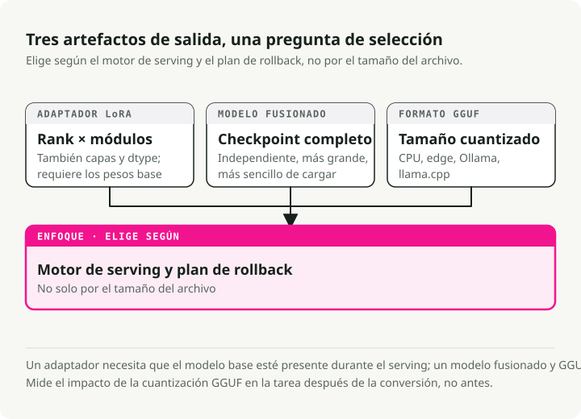

Traducción automática
Este artículo se tradujo automáticamente a partir de la versión original en inglés.
Guía de fine-tuning de LLM: LoRA, QLoRA, DoRA, Unsloth, Axolotl y despliegue
La mayoría de los proyectos de fine-tuning que he visto fracasan no en el entrenamiento, sino en los pasos anteriores y posteriores: datos malos, el modelo base equivocado, ninguna evaluación real. El entrenamiento en sí es la parte fácil. Esta guía es lo que me habría gustado tener antes de mi primer fine-tuning serio: cuándo hacerlo, cuándo no, los métodos que funcionan hoy (LoRA, QLoRA, DoRA, ORPO) y cómo llevar un modelo desde un notebook hasta un endpoint de serving.
¿Deberías hacer fine-tuning siquiera?
Antes de gastar horas de GPU, decide si el fine-tuning es la herramienta adecuada para el problema que tienes delante.

Fine-tuning vs RAG
No hagas fine-tuning solo para añadir "conocimiento". Usa esta separación en su lugar:
| Característica | Fine-Tuning | RAG (Retrieval-Augmented Generation) |
|---|---|---|
| Función principal | Altera los pesos internos para enseñar habilidades, estilos o comportamientos | Proporciona contexto externo y actualizado en tiempo de inferencia |
| Mejor para | • Estilos conversacionales específicos • Seguimiento complejo de instrucciones • Razonamiento específico de dominio |
• Datos que cambian rápidamente (noticias, cotizaciones) • Reducir alucinaciones (grounding) • Citar fuentes |
| Gestión del conocimiento | Internaliza patrones, no hechos | Recupera hechos de una base de conocimiento externa |
| Frecuencia de actualización | Requiere reentrenamiento para las actualizaciones | Se actualiza inmediatamente con nuevos documentos |
Fine-tuning vs prompt engineering
Los LLM modernos responden de forma sorprendente a prompts bien diseñados. Agota el prompting antes de recurrir al fine-tuning.
| Aspecto | Fine-Tuning | Prompt Engineering |
|---|---|---|
| Coste inicial | Alto (curación de datos, cómputo GPU, iteración) | Bajo (refinamiento iterativo de prompts) |
| Flexibilidad | Queda fijado tras el entrenamiento | Se puede cambiar en cualquier momento sin reentrenar |
| Formato/estilo | Mejor para formatos de salida complejos y consistentes | Bueno para formato simple con ejemplos few-shot |
| Latencia | Menor (sin prompts de sistema largos) | Mayor (peaje de contexto en cada petición) |
| Mejor para | Comportamientos complejos, destilación, coste a escala | Iteración rápida, requisitos cambiantes |
[!TIP] Prueba primero con prompting Empieza con ejemplos few-shot en el prompt. Si el comportamiento sigue siendo inconsistente, prueba SGR antes de recurrir al fine-tuning.
Fine-tuning vs Schema-Guided Reasoning (SGR)
Librerías como xgrammar y outlines restringen las salidas del modelo en tiempo de inferencia usando máquinas de estados finitos. Funcionan con modelos base directamente, sin necesidad de entrenamiento.
El valor de SGR no es solo la salida estructurada. Es la consistencia: la misma forma de entrada te da la misma forma de salida cada vez, sin reentrenar nada. Cuando el prompting por sí solo produce resultados inconsistentes, SGR fija el patrón de salida en tiempo de decodificación.
| Aspecto | SGR (sin fine-tuning) | Fine-Tuning |
|---|---|---|
| Configuración | Inmediata: definir esquema y desplegar | Requiere curación de datos, cómputo GPU e iteración |
| Consistencia | Estructura garantizada, patrones fiables | Comportamiento aprendido (aún puede variar) |
| Flexibilidad | Cambia el esquema en cualquier momento sin reentrenar | Queda fijado tras el entrenamiento |
| Latencia | Ligero overhead (el modelo puede "pelearse" con el esquema) | Menor (el modelo produce el formato de forma natural) |
| Mejor para | Salidas estructuradas, comportamiento consistente | Razonamiento complejo, cambios profundos de comportamiento |
Un orden práctico:
- Empieza con prompting y ejemplos few-shot para formato básico.
- Añade SGR (
xgrammarooutlines) cuando el formato sea inconsistente. - Haz fine-tuning solo cuando necesites cambios de comportamiento que un esquema no pueda imponer.
Referencia rápida: asociar problemas con soluciones
| Desafío | Mejor solución | ¿Por qué? |
|---|---|---|
| Falta de conocimiento | RAG | Los modelos alucinan hechos. La recuperación aporta contexto fundamentado y actualizado |
| Formato/tono incorrecto | Prompt Engineering | Los modelos modernos siguen bien instrucciones de estilo mediante ejemplos few-shot |
| Salidas inconsistentes | SGR (xgrammar) | Estructura garantizada y fiabilidad sin entrenamiento |
| Cambios complejos de comportamiento | Fine-Tuning (SFT) | Persona profunda, patrones de razonamiento o flujos de trabajo de varios pasos |
| Seguridad/preferencias | Alignment (DPO) | Cuando las salidas son correctas pero no encajan con las preferencias |
| Latencia/coste a escala | Distillation (SFT) | Entrena un modelo student más pequeño con las salidas de un teacher mayor |
| Reducir tamaño del modelo | Quantization | Sin entrenamiento: comprime pesos (FP16→INT4) para una inferencia más rápida |
Cuándo realmente salen las cuentas
El fine-tuning compensa cuando el tráfico es alto y los requisitos son estables. Una configuración RAG sólida suele arrastrar 2.000 tokens de contexto en cada llamada: prompt de sistema, documentos recuperados, ejemplos few-shot. Ese es un peaje de contexto que pagas en cada petición.
Un modelo afinado absorbe la mayoría de esas instrucciones en sus pesos, así que el prompt baja de ~2.000 tokens a ~50. Con suficiente volumen, eso recupera el cómputo de entrenamiento en unas pocas semanas.
[!TIP] La configuración híbrida El patrón que sigo viendo en producción: un modelo 8B afinado junto con un pequeño retriever RAG para los hechos. A menudo supera a un modelo 70B+ con prompting tanto en precisión como en coste.
Tipos de fine-tuning
Hay tres formas principales que puede adoptar el fine-tuning. Se diferencian en el tipo de datos que necesitan y en lo que enseñan al modelo.

1. Continued pre-training (no supervisado)
Entrenas el modelo base con más texto en bruto, sin etiquetas. Sigue haciendo predicción del siguiente token, igual que durante el pre-training original.
Cuándo usarlo:
- El dominio tiene vocabulario que el modelo base nunca vio (médico, legal, codebases internas).
- Tienes montones de texto del dominio pero no pares etiquetados de (entrada, salida).
- El modelo base falla con la terminología específica del dominio.
Ejemplo: entrenar con millones de notas clínicas para que el modelo aprenda abreviaturas médicas, nombres de fármacos y flujos de trabajo clínicos.
2. Supervised fine-tuning (SFT)
SFT entrena con pares etiquetados de (entrada, salida). Le muestras al modelo la salida exacta que quieres para cada entrada.
Cuándo usarlo:
- Tienes una tarea específica con un formato de entrada/salida limpio.
- Tienes datos etiquetados de calidad, incluso en poca cantidad.
- Necesitas un comportamiento predecible sobre una forma de entrada conocida.
Ejemplo: entrenar con pares de (descripción de consulta SQL, código SQL) para text-to-SQL.
{
"input": "Get all users who signed up last month",
"output": "SELECT * FROM users WHERE signup_date >= DATE_SUB(NOW(), INTERVAL 1 MONTH)"
}
3. Instruction tuning
Instruction tuning es un caso especial de SFT diseñado para hacer que los modelos sigan una amplia variedad de instrucciones en lenguaje natural. Los datos de entrenamiento son pares de (instrucción, respuesta) a través de muchas tareas distintas.
Cuándo usarlo:
- Quieres un asistente de propósito general (como ChatGPT o Claude).
- El modelo necesita manejar peticiones variadas y abiertas.
- Estás construyendo una interfaz de chat.
Ejemplo: entrenar con miles de instrucciones diversas como "Resume este artículo", "Escribe un poema sobre X", "Explica Y en términos sencillos".
Comparación
| Aspecto | Continued Pre-training | SFT | Instruction Tuning |
|---|---|---|---|
| Datos | Texto en bruto | Pares de (entrada, salida) | Pares de (instrucción, respuesta) |
| Etiquetas | Ninguna (no supervisado) | Específicas de la tarea | Tareas diversas |
| Objetivo | Conocimiento de dominio | Comportamiento para tarea específica | Seguir cualquier instrucción |
| Volumen de datos | Alto (millones de tokens) | Bajo-Medio (500-10k ejemplos) | Medio-Alto (10k-100k ejemplos) |
[!NOTE] Lo que la gente hace en la práctica La mayoría de los practitioners usan SFT para tareas concretas e instruction tuning para asistentes conversacionales. Continued pre-training es menos habitual porque necesita enormes cantidades de texto de dominio y mucho cómputo.
El pipeline de fine-tuning en 7 etapas
El fine-tuning es un pipeline, no un único comando. Cada etapa tiene sus propios modos de fallo, y saltarse una suele reflejarse más tarde en un mal modelo.

Cada etapa se apoya en la anterior:
- Preparación de datos — Limpia, deduplica y formatea tus datos (la etapa de mayor impacto)
- Selección del modelo — Elige el modelo base adecuado y carga los pesos
- Configuración del entrenamiento — Configura hardware, hiperparámetros y estrategia de optimización
- Fine-tuning — Ejecuta entrenamiento SFT, DPO u ORPO
- Evaluación — Haz benchmark del rendimiento y valida la calidad
- Despliegue — Exporta y sirve tu modelo
- Monitorización — Haz seguimiento del rendimiento, mantén e itera
[!WARNING] Los datos son la base La etapa 1 (preparación de datos) es la de mayor apalancamiento. Los algoritmos no pueden arreglar defectos sobre los que has entrenado. 500-1.000 ejemplos cuidadosamente curados suelen superar a 50.000 ruidosos.
Etapa 1: Preparación de datos
La mayoría de los proyectos de fine-tuning fracasan aquí, no en el entrenamiento. La preparación de datos moderna es más que pasar una regex sobre CSVs.

El pipeline de datos en 5 etapas
Los equipos que se toman esto en serio confían en herramientas como DataTrove (Hugging Face) y Distilabel (Argilla) en lugar de scripts ad hoc.
1. Ingesta y filtrado
- Acción: elimina rechazos ("No puedo responder a eso"), UTF-8 roto e idiomas que no sean el objetivo.
- Herramientas: Trafilatura para extracción, FastText para identificación de idioma.
2. Eliminación de PII (obligatoria en entorno enterprise)
- Acción: detecta y redacta emails, direcciones IP y números de teléfono antes del entrenamiento.
- Herramientas: Microsoft Presidio o scrubadub.
- Por qué: entrenar con PII de clientes es un incidente de seguridad esperando a ocurrir.
3. Deduplicación (MinHash LSH)
- Acción: elimina casi-duplicados para que el modelo no los memorice.
- Herramientas: DataTrove maneja bien procesamiento a escala de terabytes.
4. Aumento sintético
- Acción: usa un modelo teacher más potente (GPT-4o, DeepSeek-V3) para reescribir datos en bruto como pares limpios de instrucción-respuesta.
- Herramientas: Distilabel.
- Por qué importa: aquí suele llegar la mayor mejora de calidad.
5. Formateo
- Acción: convierte a un formato estándar (Alpaca o ShareGPT).
Ejemplos de formato de datos
Formato Alpaca (seguimiento de instrucciones):
{
"instruction": "Summarize the following text.",
"input": "The text to be summarized...",
"output": "This is the summary."
}
Formato ShareGPT/ChatML (conversacional):
{
"conversations": [
{ "from": "user", "value": "Hello, who are you?" },
{ "from": "assistant", "value": "I am a helpful AI assistant." }
]
}
Lo que realmente importa
- Calidad antes que cantidad. 500-1.000 ejemplos cuidadosamente curados superan a 50.000 ruidosos.
- Limpieza. Elimina texto irrelevante, normaliza espacios en blanco y mantén un formato consistente.
- Equilibrio. Reparte la cobertura entre temas para que el modelo no sobreajuste al segmento que domine.
- La eliminación de PII es innegociable en cualquier sistema de producción.
Etapa 2: Selección de modelo y hardware
Elegir el modelo base y entender el suelo mínimo de GPU determina lo que realmente puedes entrenar.
Hardware según el tamaño del modelo
La memoria es el suelo duro. Los números de abajo asumen entrenamiento, no inferencia.
| Nivel | Configuración de hardware | Capacidad | Caso de uso |
|---|---|---|---|
| Estándar enterprise | 8x NVIDIA H100 (80GB) | Full Fine-Tuning | Entrenar modelos 70B con contexto largo (32k+) a máxima velocidad |
| Mínimo viable (Pro) | 4x NVIDIA A100 (80GB) | QLoRA / LoRA | Fine-tuning de Qwen 72B o Llama 70B en 4-bit |
| I+D local | 4x RTX 6000 Ada (48GB) | QLoRA | Workstation on-prem para requisitos de privacidad de datos |
| Hobbyist/Indie | 1-2x RTX 3090/4090 (24GB) | QLoRA | Fine-tuning de modelos 7B-32B con métodos eficientes en parámetros |
[!TIP] Las GPUs de consumo llegan más lejos de lo que parece Con QLoRA y Unsloth, una sola RTX 4090 (24GB) puede hacer fine-tuning de modelos de hasta 32B parámetros. La 3090 sigue siendo sólida para entrenamiento de 7B-13B. El nivel de 24GB de VRAM basta para la mayoría del trabajo serio fuera del terreno de contexto largo.
[!NOTE] Por qué H100 La razón principal no es la VRAM, sino la precisión FP8. Las H100 soportan entrenamiento FP8 nativo, lo que aproximadamente duplica la memoria efectiva y el throughput frente a las A100. Para contextos de 128k tokens, FP8 en H100 suele ser la única forma de encajar un tamaño de batch razonable.
Matemáticas de memoria
Para hacer fine-tuning de un modelo 72B, la GPU tiene que alojar:
- Los pesos del modelo con precisión de 16-bit: ~144 GB.
- Gradientes y estado del optimizador: alrededor de 2-3× el tamaño del modelo según el optimizador (AdamW está en el extremo alto).
- Activaciones: crecen con la longitud de contexto, por ejemplo 32k tokens.
Por eso QLoRA (base en 4-bit + adaptadores LoRA) es el valor por defecto práctico para la mayoría de equipos.
Etapa 3: Métodos de entrenamiento (PEFT y LoRA)
Full fine-tuning vs PEFT
Full fine-tuning (FFT) actualiza todos los pesos. Un modelo 7B con precisión de 16-bit necesita alrededor de 112GB de VRAM solo para entrenar. Está fuera del alcance de la mayoría de equipos.
Parameter-efficient fine-tuning (PEFT) entrena solo un pequeño subconjunto de parámetros y congela el resto. Las cuentas pasan a ser mucho más favorables.
LoRA: el valor por defecto
LoRA (Low-Rank Adaptation) es la técnica PEFT que hay que aprender primero. Su idea clave: los cambios de pesos que realmente necesitas durante el fine-tuning tienen un "rango intrínseco" bajo, así que no hacen falta actualizaciones de rango completo.

En lugar de actualizar una matriz completa de pesos W (d × d), LoRA aprende dos matrices más pequeñas:
- A (d × r) — down-projection
- B (r × d) — up-projection
La actualización es ΔW = B × A.
Con rango r=16, eso reduce los parámetros entrenables aproximadamente 10.000×, bajando la VRAM de 120GB a 16GB.
Comparativa de métodos PEFT
| Método | Cómo funciona | Ahorro de memoria | Mejor para |
|---|---|---|---|
| LoRA | Matrices de bajo rango inyectadas en pesos congelados | ~10x | Fine-tuning general |
| QLoRA | LoRA + cuantización del modelo base a 4-bit | ~20x | GPUs de consumo (16-24GB) |
| DoRA | LoRA con descomposición magnitud/dirección | ~10x | Cuando LoRA toca techo de rendimiento |
| HFT | Congela la mitad de parámetros por ronda de entrenamiento | ~2x | Equilibrio entre FFT y PEFT |
Cuándo elegir cada uno
- LoRA: empieza aquí. Rápido, eficiente en memoria y bien soportado.
- QLoRA: cuando quieres hacer fine-tuning de un modelo 70B en GPUs de consumo.
- DoRA: cuando aparece el techo de calidad de LoRA, especialmente en tareas de razonamiento más difíciles.
- HFT: cuando LoRA no basta pero full fine-tuning es demasiado caro.
DoRA: LoRA con descomposición de pesos
DoRA (Weight-Decomposed Low-Rank Adaptation) divide cada peso preentrenado en magnitud y dirección, y los entrena por separado. Normalmente cierra gran parte de la distancia entre LoRA y full fine-tuning.

Cómo funciona:
En lugar de tratar los pesos como una única entidad, DoRA divide los pesos preentrenados en dos componentes:
- Magnitud — un escalar entrenable por columna que controla la "fuerza".
- Dirección — actualizada con matrices LoRA, que controla el "qué".
La actualización es W' = m × (V + B × A), donde:
m= magnitud (entrenable)V= dirección (W / ||W||)B × A= actualización LoRA de la dirección
Qué obtienes con esa estructura extra:
- Actualizaciones de parámetros más ricas sin renunciar a la eficiencia.
- Calidad más cercana al full fine-tuning.
- El mismo ahorro de memoria de ~10× que LoRA.
- Especialmente notable en tareas de razonamiento más difíciles.
Half fine-tuning (HFT)
HFT se sitúa entre full fine-tuning y los métodos PEFT:
- Método: en cada ronda, la mitad de los parámetros del modelo se congelan y la otra mitad se actualiza.
- Estrategia: qué mitad se congela rota de una ronda a otra.
- Por qué funciona: la mitad congelada preserva el conocimiento previo mientras la mitad activa aprende el nuevo comportamiento.
- Cuándo usarlo: cuando LoRA no te lleva hasta donde necesitas pero no puedes permitirte full fine-tuning.
Fusión de adapters para aprendizaje multitarea
En lugar de hacer fine-tuning de un único modelo monolítico para varias tareas, entrena un adapter pequeño independiente por tarea y mantén congelado el modelo base. Luego puedes fusionar adapters en tiempo de serving.
Métodos comunes de fusión:
- Concatenación — combina parámetros de adapters y aumenta el rango efectivo. Rápido y simple.
- Combinación lineal — suma ponderada de adapters. Te da knobs de control.
- SVD — descomposición matricial para fusionar. Más flexible, pero más lenta.
Ejemplo: un adapter para resumen, otro para traducción, fusionados en un único modelo multitarea.
Etapa 4: Fine-tuning y alignment de preferencias
A veces SFT acierta la respuesta pero falla en el estilo: demasiado verboso, tono incorrecto, ocasionalmente inseguro. El alignment de preferencias es lo que arregla eso.

RLHF con PPO (el enfoque antiguo)
La receta original era un pipeline de tres etapas:
- SFT — aprender la tarea.
- Reward model — entrenar con preferencias humanas (elegida vs rechazada).
- PPO (Proximal Policy Optimization) — reinforcement learning para optimizar la policy.
Los puntos débiles:
- Complicado de implementar y mantener.
- Caro: entrenas múltiples modelos.
- Sensible a los hiperparámetros y propenso a entrenamiento inestable.
DPO (el sucesor más simple)
DPO (Direct Preference Optimization) elimina el reward model explícito y el bucle de RL. Sigue optimizando el objetivo de RLHF (maximización de reward con una restricción de divergencia KL), pero lo hace como un problema de aprendizaje supervisado reparametrizado en lugar de reinforcement learning:
{
"prompt": "Explain quantum computing",
"chosen": "Quantum computing uses qubits...", # Preferred response
"rejected": "Well, it's complicated..." # Non-preferred response
}
Qué obtienes:
- Camino de código más simple (sin reward model separado, sin bucle RL).
- Entrenamiento más estable, porque es aprendizaje supervisado normal.
- Menor coste de cómputo.
DPO ganó la mayor parte de la batalla práctica, pero PPO no está completamente retirado:
- DPO puede producir soluciones sesgadas en algunas configuraciones.
- Un PPO bien ajustado sigue dando resultados state-of-the-art en tareas más difíciles como generación de código.
- La señal de reward explícita de PPO ofrece una guía más fina para tareas especializadas.
Si empiezas hoy desde cero, normalmente usarías DPO (u ORPO más abajo) primero y solo volverías a PPO si tienes un motivo real.
ORPO (una sola etapa)
ORPO (Odds-Ratio Preference Optimization) colapsa SFT y el alignment de preferencias en una sola ejecución de entrenamiento. Para la mayoría de equipos, eso es una simplificación importante.
Cómo funciona: ORPO usa una loss combinada que hace dos cosas a la vez:
- Maximiza la probabilidad de la respuesta elegida (aprendizaje de la tarea).
- Penaliza la respuesta rechazada con un término de odds-ratio (aprendizaje de preferencias).
Hiperparámetros que conviene conocer:
from trl import ORPOConfig
config = ORPOConfig(
learning_rate=8e-6, # Very low, as recommended by the ORPO paper
beta=0.1, # Controls strength of preference penalty
# ... other params
)
- Learning rate: mantenlo muy bajo (8e-6 en el paper de ORPO).
- Beta: controla cuánto empuja la penalización de preferencias (0.1 es un valor típico).
Qué obtienes con ORPO:
- Una etapa de entrenamiento en lugar de dos.
- Sin reward model.
- Menos hiperparámetros que DPO.
- El camino más corto de modelo en bruto a modelo alineado.
Cuándo elegir qué:
- ORPO: el valor por defecto para la mayoría de casos de uso.
- DPO: cuando quieres más control sobre el alignment.
- PPO: cuando necesitas una señal de reward explícita, como en generación de código.
Frameworks de fine-tuning
El ecosistema se ha asentado en torno a cuatro herramientas principales.
Unsloth — velocidad y eficiencia de memoria
Unsloth envuelve trl y transformers de HuggingFace y añade una capa de optimizaciones por encima:
- Kernels GPU personalizados en Triton para attention, RoPE y cross-entropy que evitan overhead de PyTorch.
- Backprop eficiente en memoria que recomputa activaciones durante el backward pass en lugar de mantenerlas en memoria.
- Operaciones fusionadas que colapsan varios pasos (layer norm + linear, y similares) en llamadas GPU únicas.
- Cuantización a 4-bit integrada directamente en la ruta QLoRA con dequantization optimizada.
[!IMPORTANT] El orden de importación importa Unsloth aplica parches a paquetes de HuggingFace en tiempo de importación. Importa e inicializa
FastLanguageModeldesdeunslothantes de importar nada detrlotransformers, o los parches no tendrán efecto.
# ✅ Correct order
from unsloth import FastLanguageModel # Must be first!
from trl import SFTTrainer
from transformers import TrainingArguments
# ❌ Wrong order - will fail
from trl import SFTTrainer
from unsloth import FastLanguageModel # Too late!
Mejor para: entrenamiento en una sola GPU, prototipado, notebooks de Colab, cualquiera que vigile la factura de GPU.
La gran ventaja: esos kernels personalizados de Triton lo hacen 2-5× más rápido que la ruta estándar de HuggingFace.
Axolotl — producción guiada por configuración
# config.yaml - no code required
base_model: meta-llama/Meta-Llama-3-8B
adapter: qlora
lora_r: 32
lora_alpha: 16
datasets:
- path: data/my_data.jsonl
type: alpaca
sample_packing: true
Ejecuta con: accelerate launch -m axolotl.cli.train config.yaml
Mejor para: pipelines de producción, clústeres multi-GPU, experimentos reproducibles.
La gran ventaja: las configuraciones son archivos YAML, lo que significa control de versiones y facilidad para compartir.
Comparativa de frameworks
| Característica | Unsloth | Axolotl | TRL | Torchtune |
|---|---|---|---|---|
| Fortaleza | Velocidad y eficiencia | Escala multi-GPU | Ecosistema | Nativo de PyTorch |
| Velocidad | El más rápido (2-5x) | Alta | Moderada | Alta |
| Multi-GPU | En crecimiento | Excelente | Buena | Excelente |
| Configuración | Python | YAML | Python | Python |
| Mejor para | Local/Colab | Clústeres | Investigación | Puristas de PyTorch |
Demo práctica: fine-tuning con Unsloth
Aquí tienes un ejemplo completo de mi repositorio unsloth-finetune-demo. La demo hace fine-tuning de Nemotron-Nano para function calling.

Inicio rápido
# Clone and setup
git clone https://github.com/slavadubrov/unsloth-finetune-demo.git
cd unsloth-finetune-demo
# Install with uv (recommended)
uv sync
# Run fine-tuning (quick test)
uv run finetune --max-samples 1000
Configuración
Las partes interesantes están en config.py:
# Model & Dataset
MODEL_NAME = "nvidia/Llama-3.1-Nemotron-Nano-4B-v1.1" # 4B params, 128K context
DATASET_NAME = "glaiveai/glaive-function-calling-v2" # 113K examples
# LoRA Configuration
LORA_R = 16 # Rank - higher = smarter but more VRAM
LORA_ALPHA = 32 # Scaling factor - usually 2x LORA_R
MAX_SEQ_LENGTH = 4096
# Target all linear layers for best quality
LORA_TARGET_MODULES = [
"q_proj", "k_proj", "v_proj", "o_proj",
"gate_proj", "up_proj", "down_proj",
]
[!NOTE] La proporción alpha-rank Una regla práctica común: fija alpha = 2 × rank (por ejemplo, rank=16, alpha=32). Te da actualizaciones de pesos más fuertes sin desestabilizar el entrenamiento.
Código principal de entrenamiento
from unsloth import FastLanguageModel
from trl import SFTTrainer
from transformers import TrainingArguments
# Load model with 4-bit quantization
model, tokenizer = FastLanguageModel.from_pretrained(
model_name="nvidia/Llama-3.1-Nemotron-Nano-4B-v1.1",
max_seq_length=4096,
load_in_4bit=True,
)
# Add LoRA adapters
model = FastLanguageModel.get_peft_model(
model,
r=16,
lora_alpha=32,
target_modules=["q_proj", "k_proj", "v_proj", "o_proj",
"gate_proj", "up_proj", "down_proj"],
use_gradient_checkpointing="unsloth", # Big memory savings
)
# Train with SFTTrainer
trainer = SFTTrainer(
model=model,
tokenizer=tokenizer,
train_dataset=dataset,
max_seq_length=4096,
packing=True, # Key for efficiency!
args=TrainingArguments(
per_device_train_batch_size=2,
gradient_accumulation_steps=4,
learning_rate=2e-4,
num_train_epochs=3,
bf16=True,
),
)
trainer.train()
Fine-tuning con Axolotl
[!NOTE] Demo próximamente Estoy trabajando en una demo práctica de Axolotl. Hasta entonces, la Guía de paralelismo n-D de Accelerate de Hugging Face es una buena referencia para estrategias de entrenamiento multi-GPU.
Para producción y configuraciones multi-GPU, el enfoque config-first de Axolotl hace que el flujo de trabajo sea reproducible:
# axolotl_config.yaml
base_model: meta-llama/Meta-Llama-3-8B
model_type: LlamaForCausalLM
# QLoRA configuration
load_in_4bit: true
adapter: qlora
lora_r: 32
lora_alpha: 16
lora_dropout: 0.05
lora_target_modules:
- q_proj
- k_proj
- v_proj
- o_proj
- gate_proj
- up_proj
- down_proj
# Dataset
datasets:
- path: data/training_data.jsonl
type: alpaca
# Training settings
sequence_len: 4096
sample_packing: true # Critical for speed!
micro_batch_size: 2
gradient_accumulation_steps: 4
learning_rate: 0.0002
num_epochs: 3
# Hardware
bf16: true
flash_attention: true
Ejecuta el entrenamiento:
accelerate launch -m axolotl.cli.train axolotl_config.yaml
Etapa 5: Evaluación
Entrenar es la parte fácil. Saber si el modelo realmente ha mejorado es más difícil, y necesitas respuestas antes de ponerlo en producción.
Benchmarks automatizados
Usa lm-evaluation-harness para pruebas estandarizadas:
lm_eval --model hf \
--model_args pretrained=./outputs/merged-model \
--tasks hellaswag,arc_easy,mmlu \
--batch_size 8
LLM-as-judge
Para calidad subjetiva, haz que un modelo más grande puntúe las salidas:
judge_prompt = """
Rate this response from 1-5 on:
- Relevance
- Accuracy
- Formatting
Response: {model_output}
Expected: {ground_truth}
"""
Evaluación específica de dominio
Reserva un conjunto de test con ejemplos reales de tu caso de uso. Esta es la evaluación que importa. Los benchmarks genéricos no te dirán si tu modelo de function calling está funcionando.
Etapa 6: Despliegue y formatos de salida
Después del entrenamiento tienes tres formas de exportar el modelo:

1. Adapter LoRA (por defecto)
uv run finetune # Saves ~100-500MB adapter
- Tamaño: ~100-500 MB.
- Mejor para: desarrollo, testing, múltiples adapters sobre un mismo modelo base.
- Bonus: puedes intercambiar adapters sin volver a descargar el modelo base.
2. Modelo fusionado
uv run finetune --merge # Creates standalone ~8-16GB model
- Tamaño: ~8-16 GB (pesos completos en 16-bit).
- Mejor para: compartir en HuggingFace, serving con vLLM, despliegue simple.
- Trade-off: artefacto más grande, pero sin dependencia separada del modelo base.
3. Formato GGUF
uv run finetune --gguf q4_k_m # Creates ~2-4GB quantized model
- Tamaño: ~2-4 GB (cuantización Q4_K_M).
- Mejor para: inferencia en CPU, Ollama, llama.cpp, despliegue en edge.
- Opciones:
q4_k_m(equilibrado),q5_k_m(más calidad),q8_0(casi sin pérdida).
Etapa 7: Serving y monitorización
Con vLLM (producción)
# Requires merged model format
vllm serve ./outputs/unsloth-nemotron-function-calling-merged \
--host 0.0.0.0 \
--port 8000 \
--max-model-len 4096
Consulta mediante la API compatible con OpenAI:
from openai import OpenAI
client = OpenAI(base_url="http://localhost:8000/v1", api_key="dummy")
response = client.chat.completions.create(
model="unsloth-nemotron-function-calling-merged",
messages=[{"role": "user", "content": "Book a flight to Tokyo"}]
)
Con Ollama (local)
# Create Modelfile
echo 'FROM ./outputs/unsloth-nemotron-function-calling-gguf/model-q4_k_m.gguf' > Modelfile
# Import to Ollama
ollama create my-function-model -f Modelfile
# Run
ollama run my-function-model
Con llama.cpp (CPU)
./main -m ./outputs/model-q4_k_m.gguf \
-p "What's the weather in Tokyo?" \
--ctx-size 4096
Ideas clave
- Recorre todo el pipeline. La preparación de datos es donde está el apalancamiento, no el entrenamiento.
- No recurras al fine-tuning por defecto. Prueba prompting, luego SGR y después RAG. Haz fine-tuning solo cuando eso no te lleve donde necesitas.
- Tómate en serio la preparación de datos. Usa pipelines modernos (DataTrove, Distilabel) y elimina PII antes de cualquier despliegue enterprise.
- Usa QLoRA por defecto salvo que tengas 8× H100 por ahí sin usar. Es la forma de hacer fine-tuning de modelos 70B en hardware de consumo o A100.
- Usa ORPO para alignment. El entrenamiento en una sola etapa es más simple y normalmente suficientemente rápido.
- Usa DoRA cuando LoRA alcance su techo de calidad en tareas de razonamiento más difíciles.
- Activa sample packing. Es la mayor mejora de tiempo de entrenamiento.
- Unsloth para prototipado, Axolotl para producción.
- Exporta a GGUF cuando el objetivo de despliegue sea local o edge.
Referencias
Papers e investigación
- LoRA: Low-Rank Adaptation of Large Language Models
- QLoRA: Efficient Finetuning of Quantized LLMs
- DoRA: Weight-Decomposed Low-Rank Adaptation
- DPO: Direct Preference Optimization
- ORPO: Odds Ratio Preference Optimization
- PPO: Proximal Policy Optimization Algorithms — OpenAI, 2017
- HFT: Half Fine-Tuning for Large Language Models — Mitigación del catastrophic forgetting
Herramientas de procesamiento de datos
- DataTrove — Procesamiento de datos a escala de Hugging Face
- Distilabel — Generación de datos sintéticos (Argilla)
- Trafilatura — Extracción y crawling de texto web
- FastText — Identificación de idioma de Facebook AI (soporta 217 idiomas)
- Microsoft Presidio — Detección y anonimización de PII
- scrubadub — Librería Python para eliminar PII
Schema-Guided Reasoning (SGR)
Frameworks de entrenamiento
- Unsloth — Campeón en velocidad y eficiencia (2-5x más rápido)
- Axolotl — Entrenamiento multi-GPU guiado por configuración
- TRL (Transformer Reinforcement Learning) — Entrenamiento RL de Hugging Face
- Torchtune — Librería de fine-tuning nativa de PyTorch
Inferencia y despliegue
- vLLM — Motor de serving de LLM de alto throughput
- Ollama — Ejecutor local de LLM para Mac/Windows/Linux
- llama.cpp — Inferencia CPU/GPU con formato GGUF
Evaluación
- lm-evaluation-harness — Benchmarking estandarizado de LLM de EleutherAI
Guías y recursos
- Demo Repository — Ejemplo práctico de fine-tuning
- LLM Fine-Tuning. Theoretical Intuition and Practical Implementation — Notebook de investigación de NotebookLM
- Accelerate n-D Parallelism Guide — Estrategias de entrenamiento multi-GPU de Hugging Face